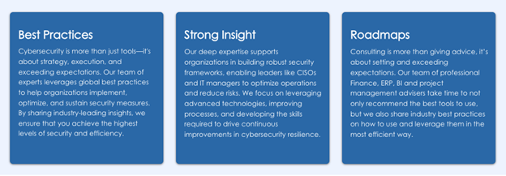
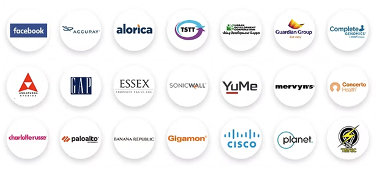
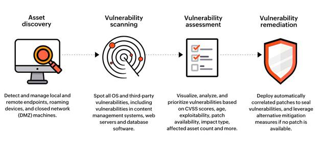
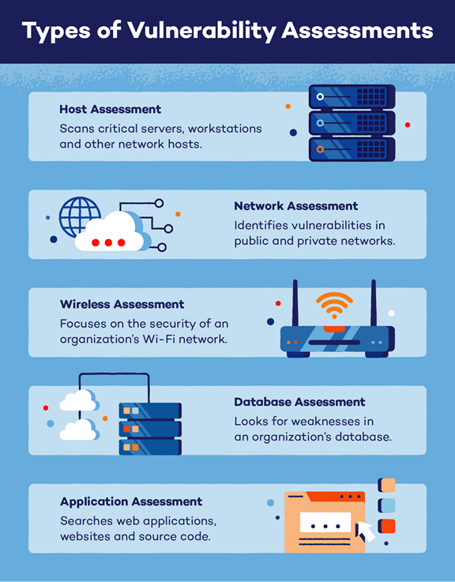
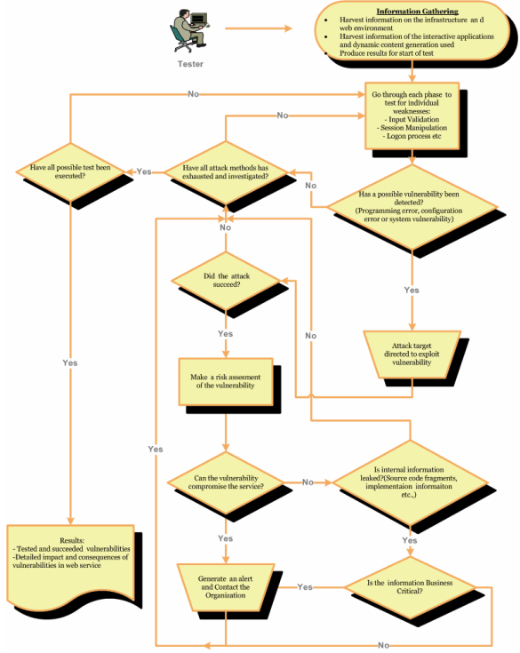
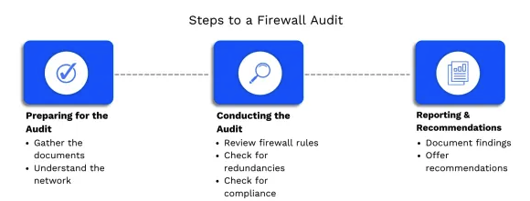
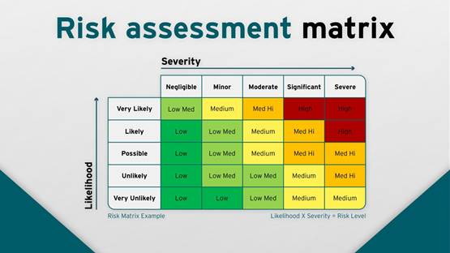

Proposal for Cybersecurity Audit & Penetration Testing Services
REQUEST FOR PROPOSAL NUMBER: IFB No. 2025007 (Cyber Security Audit) Issued: December 26th 2024
|
Submitted By: Brahma Gupta, Indrasol
(founder) Submitted To: Korey Kennedy
|
|
Table of Contents
2.2 Indrasol’s Presence & Service to MRCS 5
2.3 Key Credentials and experience: 5
2.5 Indrasol: A Trusted CSA San Francisco Partner for Cybersecurity Excellence 7
3.1 Vulnerability Assessment 9
3.2 Penetration Testing (refer appendix for detailed checklists) 11
4. Project Methodology & Tools 15
4.1 Understanding of Statement of Need 15
4.2 Schedule & Plan of Work for MRCS Cybersecurity Assessment 17
4.3 Scanning Tools & Equipment for MRCS Cybersecurity Audit 19
4.4 OWASP Risk Assessment Matrix Used by Indrasol 23
6.0 Experience (Refer appendix for detailed profiles) 26
6.1 Key Personnel & Responsibilities for MRCS Cybersecurity Project 26
6.2 Qualifications of assigned personnel 31
6.3 Certifications, Skills, and Specializations 31
8. Bidder information and signature 33
9.1 References of Methodologies followed 34
1.0 Executive Summary
Indrasol, a leading cybersecurity firm headquartered in San Ramon, CA, is pleased to submit this proposal in response to IFB #2025007 issued by Mount Rogers Community Services (MRCS). With over a decade of expertise in delivering robust cybersecurity solutions enterprises, Indrasol specializes in fortifying information systems against sophisticated cyber threats.
Our proposal outlines a comprehensive approach to conducting a penetration testing and operational framework review aligned with NIST 800-171 standards. By leveraging industry-leading tools, methodologies, and a team of certified professionals, we ensure MRCS achieves its objectives of enhanced system resilience, minimized vulnerabilities, and compliance with security best practices. Our transparent pricing model and commitment to excellence make Indrasol the ideal partner for this critical initiative.
Indrasol is committed to delivering cutting-edge cybersecurity solutions with a focus on innovation, reliability, and customer-centric service. Our philosophy is rooted in:
● Excellence in Security: We provide comprehensive and tailored security solutions to safeguard digital assets.
● Customer Partnership: We collaborate closely with clients to understand their unique security needs and offer strategic guidance.
● Continuous Improvement: Staying ahead of emerging threats by leveraging the latest technologies and best practices.
● Integrity and Trust: Building long-term relationships based on transparency and ethical business practices.
2.0 Company Overview
2.1 Indrasol Overview
Indrasol is a technology and consulting firm dedicated to helping businesses prosper by providing a range of services designed to enhance performance and reduce costs. With over 15 years of experience and more than 50 successfully completed projects, Indrasol specializes in improving functions across Cyber Security, Network Security, Cloud Security, Supply Chain, Procurement, Human Capital, Financial Planning & Analysis, Budgeting, Reporting, and Business Analytics.

As an Oracle Gold Partner, Indrasol offers expertise in managed services, professional services, cloud services, data analytics, and cybersecurity. Our team of certified professionals is committed to delivering top-tier solutions tailored to meet the unique needs of every client.
At Indrasol, we specialize in delivering premium AI security, application security, security architecture, network security, and SOC 2 services, offering comprehensive risk management solutions tailored to businesses of all sizes.
Backed by extensive industry expertise and proficiency in the NIST Cybersecurity Framework and ANSI ISO/IEC 27001 standards, we are committed to excellence and aligning with global best practices.
Discover how Indrasol can partner with you to build a robust and resilient security foundation. Whether you require risk management, regulatory compliance, or expert advice in AI security, application security, security architecture, or network security, we are dedicated to supporting your success with confidence and security.
2.2 Indrasol’s Presence & Service to MRCS
Our San Ramon, CA headquarters, located at 6101 Bollinger Canyon Rd, Suite 335 C, San Ramon, CA 94583, USA, serves as our primary hub for cybersecurity operations.
2.3 Key Credentials and experience:
At Indrasol, we have a dedicated team of highly experienced professionals who hold the necessary certifications to excel in their roles and deliver exceptional results
From advanced AI-driven systems to robust network firewalls, we provide comprehensive coverage across all facets of cybersecurity. Our expertise spans a wide range of solutions, including threat detection, risk assessment, data protection, and incident response, ensuring that your digital infrastructure remains secure and resilient against evolving cyber threats.
■ Proactive Threat Detection: We’re ahead of the curve, actively hunting and mitigating threats before they impact your business.
■ Custom-Tailored Solutions: No "one-size-fits-all" approach. We tailor every solution to your organization's unique needs.
■ Get Started with Indrasol Cybersecurity Services Protect your business with comprehensive, tailored security solutions from Indrasol. From AI Security to SOC 2 Certification, we offer everything you need to build trust, meet compliance requirements, and secure your digital future.
■ Expertise in NIST frameworks, including NIST 800-171, NIST Cybersecurity Framework (CSF), and CMMC compliance.
■ Highly qualified team holding certifications such as CEH, OSCP, and CCNA.
2.4 Customers who trust us

David Wellman Vice President of Finance at Alorica
“I've worked with Indrasol team extensively over the past several years, as they not only assist us with the ongoing maintenance and support of our management financial reporting systems, but they were also our implementation partner as we moved our on-premises Hyperion instance to the cloud, while also doing a major implementation of Oracle's EPBCS (Enterprise Planning and Budgeting Cloud Solution). When it came time to choose a partner, it came down to Indrasol and one of the other big-name companies that you would think of when it comes to that sort of engagement. While the relative value they provided compared to the competition was readily apparent, that was not the major factor that tipped things in their favor – our main considerations were their expertise and skills in the area, the ready partnership and communication they showed, as well as their flexibility to adapt & adjust within reasonable bounds as the project progressed.”
Chandra Sreeram, Marketing Analytics and Operations Leader at Gigamon
Having worked with the Indrasol team under Brahma's leadership over the past few years, I can say that they have strong expertise in analytics and cloud technologies. They have been assisting us with marketing analytics on the Azure platform. We are happy with Indrasol, and I strongly recommend them.
Raj Vakil Senior, Vice President Finance at Accuray
We've been working with Indrasol for almost three years now and plan to continue working with the team of talented people for years to come. They have the right technical staff to take up any task. Whether it's an enhancement or a year-long project, they stay on top of things with absolute commitment. They consistently exceed our expectations, providing quality services with cost efficient support, quick resolution of issues and round-the-clock availability.
2.5 Indrasol: A Trusted CSA San Francisco Partner for Cybersecurity Excellence
Indrasol is proud to be a strategic partner of the Cloud Security Alliance (CSA) San Francisco Chapter (CSA SFO), reinforcing our commitment to advancing cloud security and cybersecurity best practices. Through this partnership, we collaborate with industry leaders, security practitioners, and organizations to drive innovation, share knowledge, and implement cutting-edge security solutions.

3.0 Scope of Work
Based on the IFB requirements, at Indrasol we excel in the following services:
3.1 Vulnerability Assessment
Vulnerability assessment is a structured process aimed at identifying and mitigating security weaknesses across MRCS’s infrastructure. It includes the following key phases:
■ Asset Discovery: Identification and cataloging of all assets within the network, including endpoints, servers, cloud environments, and IoT devices.
■ Vulnerability Scanning: Execution of automated scans using industry-leading tools like Nessus, Qualys, and OpenVAS to detect potential vulnerabilities in systems and applications.
■ Vulnerability Assessment: Analysis of detected vulnerabilities to assess severity, exploitability, and potential business impact, prioritizing them based on risk level.
■ Vulnerability Remediation: Providing a comprehensive remediation plan, including patch management strategies, configuration changes, and compensatory controls to mitigate risks effectively.


3.2 Penetration Testing (refer appendix for detailed checklists)
Penetration testing simulates real-world cyberattacks to identify and exploit security weaknesses. Our methodology follows a structured approach aligned with industry standards such as NIST and OWASP:
- Planning & Reconnaissance:
○ Define testing scope, objectives, and success criteria.
○ Gather intelligence on network and application infrastructure using passive and active reconnaissance techniques.
- Scanning & Enumeration:
○ Identify live hosts, open ports, and services.
○ Map the attack surface and discover potential entry points.
- Exploitation:
○ Execute controlled attacks to exploit identified vulnerabilities.
○ Test for privilege escalation and lateral movement within the network.
- Post-Exploitation & Persistence:
○ Assess the level of access gained and potential impact on critical systems.
○ Evaluate persistence techniques that an attacker could use to maintain unauthorized access.
- Reporting & Remediation Guidance:
○ Document findings with detailed risk analysis and remediation steps.
○ Provide actionable insights to strengthen MRCS’s security posture

Assessment workflow
|
 |
3.3 Firewall Evaluation
Firewall evaluation is a crucial aspect of network security, ensuring that MRCS's firewalls are configured optimally to prevent unauthorized access and cyber threats. Our evaluation process includes:

■ Firewall Configuration Review: Assessing existing firewall settings, policies, and access control rules to ensure they align with security best practices and industry standards such as NIST 800-41.
■ Policy and Rulebase Analysis: Reviewing firewall rule sets to identify redundant, overly permissive, or misconfigured rules that may introduce security risks.
■ Intrusion Prevention System (IPS) and Logging: Evaluating IPS configuration and log settings to ensure active monitoring and real-time threat detection.
■ Network Segmentation Assessment: Ensuring that network segmentation strategies are effectively implemented to limit lateral movement of threats within the MRCS infrastructure.
■ Performance and Optimization: Analyzing firewall performance to ensure security configurations do not impede legitimate network traffic or cause operational inefficiencies.
■ Firewall Hardening Recommendations: Providing actionable recommendations for enhancing firewall security, including least-privilege access, advanced threat prevention mechanisms, and improved logging practices.
■ Review overall firewall configuration, policies, and intrusion prevention settings.
■ Validate application and protocol filters against industry benchmarks.
3.4 Deliverables
Upon completion of the cybersecurity assessment, Indrasol will provide MRCS with comprehensive documentation and actionable insights, including:
● Executive Summary: A high-level overview of assessment findings, key vulnerabilities, and recommended actions.
● Technical Vulnerability Report: A detailed report outlining identified security gaps, categorized by severity and potential impact on MRCS’s infrastructure.
● Penetration Testing Report: Documentation of penetration test findings, including exploited vulnerabilities, attack paths, and proof-of-concept exploits where applicable.
● Firewall Evaluation Report: A comprehensive analysis of firewall security, including misconfigurations, rulebase recommendations, and performance optimizations.
● Remediation Roadmap: A prioritized list of corrective actions, with recommended fixes for vulnerabilities, firewall hardening steps, and long-term security improvements.
● Compliance Alignment Report: A report mapping findings and recommendations against NIST 800-171 and other relevant cybersecurity compliance standards.
● Post-Assessment Consultation: A debriefing session with MRCS stakeholders to discuss findings, answer questions, and provide guidance on implementation strategies.
● Comprehensive assessment report detailing findings, implications, and recommendations.
● Immediate mitigation steps for identified high-risk vulnerabilities.
● Long-term roadmap to enhance MRCS’s cybersecurity posture.
4. Project Methodology & Tools
4.1 Understanding of Statement of Need
Indrasol fully understands the Statement of Need outlined in IFB #2025007 for Mount Rogers Community Services (MRCS). The primary objective of this engagement is to conduct a comprehensive information security penetration testing and operational framework review assessment. The goal is to enhance MRCS’s security posture by identifying vulnerabilities, mitigating risks, and ensuring compliance with industry standards such as NIST 800-171.
To address MRCS’s requirements effectively, Indrasol will deliver the following services:
■ Vulnerability Assessment – Conduct external and internal vulnerability scans, including web application and business system security assessments.
■ Penetration Testing – Perform external, internal, and wireless penetration tests to identify security gaps across MRCS’s infrastructure.
■ Firewall Evaluation – Assess firewall configurations, policies, and logs to ensure optimal security settings.
■ Operational Framework Review – Evaluate MRCS’s security policies and procedures against industry benchmarks.
Indrasol follows a structured methodology based on leading cybersecurity frameworks such as NIST 800-171, OWASP, and BSIMM (Building Security In Maturity Model) to ensure a comprehensive, risk-based approach to securing MRCS’s infrastructure.
1. Planning & Scoping
■ Define objectives, scope, and success criteria in collaboration with MRCS stakeholders.
■ Identify critical assets, compliance requirements, and acceptable risk levels.
■ Establish communication protocols and testing windows to minimize disruption.
2. Risk Assessment
■ Utilize NIST Risk Management Framework (RMF) to classify and prioritize assets based on risk exposure.
■ Apply OWASP testing process to map attack vectors against MRCS infrastructure.
■ Implement BSIMM measurement techniques to assess security maturity and recommend best practices.
3. Vulnerability Assessment & Penetration Testing
■ Conduct automated and manual vulnerability scans using industry-leading tools like Nessus, Qualys, OpenVAS, and Burp Suite.
■ Perform penetration testing using OWASP testing process framework to simulate adversarial tactics.
■ Test external, internal, and wireless networks following OWASP Penetration Testing Guidelines.
4. Security Configuration & Compliance Review
■ Conduct firewall configuration reviews in alignment with NIST 800-41 guidelines.
■ Validate authentication mechanisms, encryption protocols, and access controls.
■ Assess cloud and on-premises security configurations against CIS Benchmarks.
5. Reporting & Remediation Support
■ Deliver a detailed risk assessment report with technical findings and executive summaries.
■ Provide a prioritized remediation plan categorized by risk severity (Critical, High, Medium, Low).
■ Offer post-assessment guidance and training to MRCS personnel to improve security resilience.
■ By integrating NIST, OWASP, and BSIMM methodologies, Indrasol ensures that MRCS receives a holistic and actionable security assessment tailored to its unique operational environment.
4.2 Schedule & Plan of Work for MRCS Cybersecurity Assessment
Project Scope and Size Considerations
The proposed cybersecurity audit and penetration testing services will cover a vast and complex IT infrastructure, which includes:
● 24 Public IP Addresses for external network security testing.
● 135 Internal Subnets requiring comprehensive vulnerability assessment and penetration testing.
● 40 Locations that house MRCS operations, necessitating both remote and on-site evaluations.
● 850 Users accessing MRCS systems, which require identity and access management testing.
● Multiple Web Applications and Business-Critical Systems, including HR, Payroll, and Financial systems, which will be assessed for security vulnerabilities.
Given the size and complexity of the infrastructure, the timeline for testing and assessment may be subject to change. Any modifications or upgrades to the current system during the engagement could potentially extend the duration of the project. MRCS and Indrasol will maintain open communication to account for such contingencies and adjust the timeline as necessary
Delays in receiving required information consideration
The proposed schedule and timeline for the MRCS cybersecurity assessment is based on the assumption that all necessary details, access credentials, network architecture information, and approvals are provided by MRCS in a timely manner.
Any delays in receiving required information may result in an extension of the overall project timeline. To ensure a smooth and efficient assessment, Indrasol will maintain regular communication with MRCS stakeholders and provide timely follow-ups on pending inputs.
Our goal is to adhere to the planned schedule while maintaining the highest standards of security evaluation and reporting
|
Phase |
Tasks & Activities |
Timeline |
Approach & Deliverables |
|
Phase 1: Project Initiation |
Kickoff Meeting with MRCS stakeholders to define scope, objectives, and expectations. |
Week 1 |
Agenda, scope confirmation, communication plan. |
|
|
Gather necessary credentials, IP ranges, and system architecture details. |
Week 1 |
Approved access list, documentation of network scope. |
|
Phase 2: Vulnerability Assessment |
Conduct external and internal vulnerability scans using industry-leading tools (e.g., Nessus, Qualys). |
Week 2 |
Raw scan results, initial risk analysis. |
|
|
Perform web application security testing to identify vulnerabilities in MRCS’s applications. |
Week 3 |
Web security assessment report. |
|
|
Conduct a business system security review (HR, Payroll, Business Office). |
Week 4 |
Business system risk report. |
|
Phase 3: Penetration Testing |
Perform external penetration testing to simulate real-world cyberattacks on internet-facing systems. |
Week 5 |
Exploitation analysis, risk findings. |
|
|
Conduct internal penetration testing by mimicking an attacker inside MRCS’s network. |
Week 6 |
Internal security posture report. |
|
|
Execute wireless penetration testing across MRCS’s four separate wireless networks. |
Week 7 |
Wireless security assessment report. |
|
Phase 4: Firewall Evaluation |
Review firewall configurations, access controls, policies, and logs to identify security gaps. |
Week 8 |
Firewall audit report with recommendations. |
|
Phase 5: Reporting & Recommendations |
Compile final assessment report summarizing vulnerabilities, risks, and remediation strategies. |
Week 9 |
Detailed security assessment report with actionable recommendations. |
|
|
Conduct executive briefing & technical debrief with MRCS leadership. |
Week 10 |
Executive summary, technical Q&A session. |
|
Phase 6: Remediation Support & Advisory |
Provide guidance on implementing security fixes & best practices. |
Week 11 (optional) |
Follow-up consultation, mitigation roadmap. |
4.3 Scanning Tools & Equipment for MRCS Cybersecurity Audit
|
Category |
Tool Name |
Purpose & Usage |
|
Operating system |
Kali Linux (Latest Version) |
Industry-standard OS for penetration testing & security auditing. |
|
Vulnerability Scanning |
Tenable Nessus |
Identifies vulnerabilities in internal and external network assets, servers, and endpoints. |
|
|
Qualys Vulnerability Management |
Cloud-based vulnerability detection and compliance reporting. |
|
|
OpenVAS |
Open-source vulnerability scanning for network and system weaknesses. |
|
Penetration Testing |
Metasploit Framework |
Simulates real-world cyberattacks to identify exploitable weaknesses. |
|
|
Burp Suite Pro |
Advanced web application security testing, including SQLi and XSS detection. |
|
|
SQLmap |
Automated SQL injection testing to identify database security flaws. |
|
|
Responder |
Tests and exploits misconfigured network authentication protocols. |
|
Wireless Security Assessment |
Aircrack-ng |
Assesses wireless network security, including WPA2 vulnerabilities. |
|
|
Kismet |
Wireless network packet analysis and rogue access point detection. |
|
Firewall & Network Security Review |
Nmap |
Network discovery and security auditing for firewall configurations. |
|
|
Wireshark |
Packet capture and analysis to detect anomalies in network traffic. |
|
|
Firewall Audit Tool (FAT) |
Automates firewall rule and policy assessments. |
|
Web Application Security |
OWASP ZAP |
Identifies vulnerabilities in web applications, including XSS and CSRF. |
|
|
Nikto |
Web server scanning to detect misconfigurations and security weaknesses. |
|
Compliance & Security Frameworks |
SCAP Compliance Checker (SCC) |
Validates configurations against NIST 800-171 and CIS benchmarks. |
|
|
Tenable SC (SecurityCenter) |
Centralized security management, compliance tracking, and reporting. |
|
Password & Credential Security Testing |
Hashcat |
Password auditing and brute-force attack simulations. |
|
|
John the Ripper |
Tests weak or exposed passwords across user accounts. |
Metasploit
Metasploit is the industry’s best open-source penetrating framework, which security experts use as a penetration testing system. This tool enables an individual, such as a network administrator, to break in and recognize critical flaws. Some novice hackers also use this tool to hone their skills.
Metasploit’s various tools, user interfaces, libraries, and modules. All these tools, interfaces, etc., allows a user to customize a disruptive software (module), pair it with a payload (such as viruses, worms, trojan horses, ransomware, etc.), point at a target, and launch it at the target system.
Metasploit’s objective is to assist users in identifying where they are the most vulnerable to cyberattacks and to quickly and effectively patch those holes before attackers exploit them.
WireShark
Wireshark is an open-source network traffic profiling and packet analysis tool. This tool provides detailed information about your network protocols, decryption, packet information, and so on. This tool is also known as a sniffer, network analyzer, network protocol analyzer, etc.
Wireshark captures real-time packets and displays them in a human-readable format. This tool is compatible with Linux, FreeBSD, OS X, Solaris, Windows, NetBSD, and various other operating systems.
Burp Suite
Burp Suite is a collection of tools for web application penetration testing. These sets of tools (such as Spider, Proxy, etc.) fully integrate to assist with the entire testing process, from preliminary mapping and analysis of an application’s attack surface to identifying and exploiting security flaws.
You can even use this tool to modify the raw HTTP before sending the request to the web server. While doing so, this tool acts as a proxy, or “man in the middle,” between you and the web application, enabling you to have more accurate control over the traffic you receive and transmit.
Nikto
Nikto, also known as Nikto2, is an open-source software. This tool allows you to scan a web server for vulnerabilities that can be exploited and cause the server to be compromised. This tool includes a web server scanner, a pre-packaged list of potentially harmful files, and a misconfiguration checker.
Nikto can run comprehensive tests against web servers for various security threats, including over 6700 pre-packaged lists of potentially dangerous files, as well as check for outdated version-specific issues and web server software.
Intruder
Intruder is a cloud-based vulnerability scanner that aids in the detection of flaws in your online systems. This tool can help you save time by quickly and effectively scanning for new threats and offering a unique threat analysis system that simplifies vulnerability management.
Intruder security checks include detecting missing patches, configuration issues, and standard web app issues like cross-site scripting, SQL injection, etc.
Kali Linux
Kali Linux is a free, open-source operating system designed for security professionals, penetration testers, and ethical hackers. It is based on Debian and aims to provide over 600 tools for penetration testing and security auditing. Penetration Testing tools in Kali Linux include tool listings, version tracking, and meta-packages.
● There are over 600 penetration tools included.
● Support for various languages and can be customized.
Nessus
Nessus is a popular paid penetration testing tool that allows network security experts and admins to inspect their networks by scanning IP address ranges and recognizing vulnerabilities using a series of plug-ins.
This tool provides greater flexibility in vulnerability detection across the network and is simple to implement. Nessus can even scan from outside the firewall, providing real-time visibility of security flaws.
W3af
The acronym w3af stands for web application attack and audit framework. This open-source web-based security scanner includes a vulnerability scanner and web application exploitation tools.
John The Ripper
John the Ripper is a password security auditing and password recovery tool available for various operating systems. One notable feature of John is its ability to auto detect encryption for standard formats. This will save you significant time researching hash formats and locating the appropriate tool to crack them.
John the Ripper tool combines several different cracking programs and operates in brute force and dictionary attack modes.
4.4 OWASP Risk Assessment Matrix Used by Indrasol
Indrasol follows the OWASP Risk Assessment Matrix to systematically evaluate, rate, and prioritize security findings during penetration testing and vulnerability assessments. This methodology ensures consistent risk scoring, helping MRCS focus on high-impact vulnerabilities first.
OWASP Risk Rating Methodology
The OWASP Risk Assessment Matrix evaluates security findings based on two key factors:
● Likelihood – The probability that a vulnerability will be exploited.
● Impact – The potential damage if the vulnerability is successfully exploited.
Each factor is scored from Low (1) to High (3), leading to an overall Risk Score (Low, Medium, High, or Critical).

5. Financial Proposal
Indrasol offers a competitive and transparent pricing structure. All pricing includes materials, equipment, incidentals, and fees associated with the delivery of services as listed in the Scope of Work.
|
Service |
Lump Sum Total Amount (Words) |
USD ($) |
|
Vulnerability Assessment |
Forty Thousand Dollars |
$40,000 |
|
Penetration Testing (External, Internal, and Wireless) |
Fifty Thousand Dollars |
$50,000 |
|
Firewall Evaluation |
Twenty Thousand Dollars |
$20,000 |
|
Web Application Security Assessment |
Fifteen Thousand Dollars |
$15,000 |
|
Vulnerability Assessment of Business Systems (HR, Payroll, Business Office) |
Twenty Thousand Dollars |
$20,000 |
|
Total |
One Hundred Forty-Five Thousand Dollars |
$145,000 |
|
Monthly Penetration Testing Services (Optional) |
Ten Thousand Dollars |
$10,000/month |
Terms & Conditions
- Discounts & Negotiations: The price is subject to negotiations. Any applicable discounts or cost reductions will be discussed and finalized during contract negotiations.
- Firm Fixed Price Agreement: Upon award, pricing for services under this contract will remain a firm fixed price for the duration of the contract, including any extensions.
- MRCS Resources Required: Yes, we need MRCS resource
- Subcontracting: External pentesting could be subcontracted.
6.0 Experience (Refer appendix for detailed profiles)
Indrasol prides itself on assembling a team of highly skilled professionals who bring extensive expertise in cybersecurity, compliance, and risk management. Our team members hold top industry certifications and have worked on numerous government and enterprise security projects. Below is a detailed overview of our team’s expertise and qualifications.
6.1 Key Personnel & Responsibilities for MRCS Cybersecurity Project
Indrasol's cybersecurity team is composed of highly experienced professionals with extensive backgrounds in security assessments, penetration testing, compliance, and risk management. The team is led by industry veterans with deep expertise in both offensive and defensive cybersecurity tactics.
Indrasol’s cybersecurity initiatives are spearheaded by industry veterans with deep expertise in both offensive and defensive security strategies.
|
Name |
Role |
Responsibilities |
|
Satish Govindappa |
Primary Point of Contact (PoC) & CSO Indrasol |
Liaison: Serve as the main point of contact between Indrasol & MRCS, ensuring seamless communication. Oversight: Manage vulnerability assessments, penetration testing (network, web, and wireless), and firewall security evaluations. Compliance: Ensure alignment with NIST 800-171, ISO 27001, and CIS frameworks. Reporting: Deliver comprehensive security reports and conduct debriefing sessions with MRCS leadership. Resource Management: Pull additional Indrasol resources as needed to support the project. |
|
Megha Satish |
Network & Infrastructure Penetration Tester |
Network Security: Conduct network and infrastructure penetration testing to identify security weaknesses. Firewall Assessment: Perform firewall evaluations, internal and external network security testing using tools like Wireshark, Nmap, and Nessus. System Hardening: Ensure comprehensive security enhancements of MRCS’s IT infrastructure. Collaboration: Work closely with Satish Govindappa to integrate findings into the final security report. |
|
Indrasol Resource Pool |
Additional Security Experts (As Needed) |
Scalability: Indrasol has a strong pool of cybersecurity professionals available for specialized tasks. Expertise Allocation: Satish Govindappa will pull in experts as needed for areas like web application security, compliance audits, and risk assessments. Quality Assurance: Ensures MRCS receives dedicated, high-quality security expertise throughout the project. |
Why This Structure?
● Dedicated Leadership – Satish Govindappa is the full-time PoC, ensuring smooth project execution.
● Focused Expertise – Megha Satish specializes in network & infrastructure penetration testing.
● Scalability & Support – Indrasol can scale resources as needed to meet project demands.
This structure ensures a well-coordinated, expert-driven approach to strengthening MRCS’s cybersecurity posture. Let me know if you need modifications
Indrasol Organization Structure
|
Pillar Leader |
Title |
Pillar Name |
|
|
Gupta B ILINDRA |
CEO/President |
Business Operations |
Jayanthi Vema |
|
Ravi Chakali |
|||
|
Abhitha Ilindra |
|||
|
Chandrika Chinigepalli |
|||
|
Analytics & AI |
Rithin Gullapalli |
||
|
Sujay Ravi Kaushik |
|||
|
Uma Dhakras |
|||
|
Anjali Swati Unnithan |
|||
|
Genissa De Vera |
|||
|
Ashish Bhoi |
|||
|
Biswendu Mandal |
|||
|
Anand Chiluka |
|||
|
Deepak Kumar |
|||
|
Hariprasad Bandla |
|||
|
Saurav Mohanty |
|||
|
Navjot Dhilon |
|||
|
Vasavi Chavala |
|||
|
Gayatri Bommisetty |
|||
|
Jyoti Kunapareddy |
|||
|
Ethan Fei Ji |
|||
|
Teja Bobbili |
|||
|
Kalyan Bavanka |
|||
|
Program Management |
Sid Shah |
||
|
Juanita Lopez |
|||
|
Chandra Sreeram |
|||
|
Sam Vaddi |
|||
|
Rama Kattunga |
|||
|
Banshidhar Pandey |
|||
|
Application Development & Cloud Technologies |
Shoumya Singh |
||
|
Kartik Vijay Shanbhag |
|||
|
Raghavendra Dinesh |
|||
|
Keerthi Velugoti |
|||
|
Mahidhar Atmakuru |
|||
|
Dharmatej Neelakanti |
|||
|
Chandupriya Kaluva |
|||
|
Harika Kilaru |
|||
|
Chandrasekhar Pulipati |
|||
|
Narendra Vema |
|||
|
Priyanka Vankayala |
|||
|
Sales & Marketing |
Dhara Venkata Krishnaiah |
||
|
Shashi Kumar |
|||
|
Jordan DiFazio |
|||
|
Keith Nickens |
|||
|
Quality Assurance |
Sirisha Kummamuri |
||
|
Ambica Chaluvadi |
|||
|
Dhruva Kumar Vankadari |
|||
|
Rajesh Nalluri |
|||
|
Satish Govindappa |
Principal, CSO |
Cybersecurity |
Megha Satish |
|
Kiran Kumar Reddy |
|||
|
Revant Enamala |
|||
|
Kartik Gudipally |
|||
|
Rakesh Gopagani |
6.2 Qualifications of assigned personnel
Satish Govindappa - CSO Indrasol
■ 25 years of experience in cybersecurity consulting, penetration testing, and risk assessments.
■ Expertise in network security assessments, vulnerability scanning, and penetration testing.
■ Hands-on experience with Nessus, Metasploit, Burp Suite, and OpenVAS.
■ Working experience in top companies like Synopsys, ICE-NYSE, Fidelity Investments, TD Ameritrade, Depository Trust & Clearing Corporation, MindTree, Honeywell and AOL.
■ Led numerous government and enterprise security projects ensuring compliance with NIST, ISO 27001, and CMMC standards.
■ Chapter Leader and Board member for Cloud security alliance - SFO, Chapter lead and Core Member of Null Security Group and OWASP Security Communities responsible for organizing, conducting and presenting the "meet" on a weekly/monthly basis.
Megha Satish - Security Analyst (CEH,CCNA)
■ Expertise in network security assessments, vulnerability scanning, and penetration testing.
■ Hands-on experience with Nessus, Metasploit, Burp Suite, and OpenVAS.
■ Specializes in regulatory compliance, security policy implementation, and risk management frameworks.
■ Ensures adherence to FISMA, HIPAA, and PCI DSS requirements.
6.3 Certifications, Skills, and Specializations
Our team members bring a diverse range of skills and specializations, ensuring a comprehensive approach to cybersecurity assessments.
● Security Certifications: CEH, OSCP, ECSA, SCJP, CCNA
● Technical Expertise: Penetration Testing, Network Security, Cloud Security, Incident Response, Security Compliance.
● Tools and Platforms: Nessus, Qualys, Metasploit, Wireshark, Burp Suite, OpenVAS, Splunk, AWS Security Hub, Azure Sentinel.
Our team’s blend of experience, technical acumen, and commitment to security excellence positions Indrasol as the ideal partner for MRCS. We ensure a robust cybersecurity posture by leveraging deep industry knowledge, real-world expertise, and best-in-class methodologies.
7. Conclusion
Indrasol is uniquely positioned to deliver exceptional cybersecurity services to MRCS by leveraging our extensive experience, certified expertise, and client-centric approach. Our team brings decades of hands-on cybersecurity experience across diverse industries, ensuring that MRCS receives best-in-class protection against evolving threats.
By partnering with Indrasol, MRCS will benefit from:
✅ A Proven Methodology Aligned with IFB Requirements
We tailor our approach to meet the specific
requirements outlined in the Invitation for Bid (IFB), ensuring compliance,
efficiency, and effectiveness. Our structured process integrates risk-based
assessments, threat modeling, and proactive mitigation strategies to deliver
comprehensive security solutions.
✅ Industry-Leading Tools and Frameworks for Reliable Assessments
We utilize cutting-edge security tools, frameworks,
and best practices, such as NIST, ISO 27001, and CIS benchmarks, to conduct
in-depth evaluations. Our team’s expertise ensures thorough risk analysis,
vulnerability assessments, and compliance validation, providing MRCS with a
robust cybersecurity foundation.
✅ Commitment to Transparency, Quality, and Value
At Indrasol, we prioritize open communication and
accountability. Our transparent reporting, clear recommendations, and
commitment to delivering measurable value help MRCS make informed security
decisions. We focus on long-term resilience, empowering MRCS to maintain a
strong security posture while optimizing resources effectively.
We are eager to collaborate with MRCS to enhance its cybersecurity resilience and uphold its mission of serving the community safely and securely. We appreciate the opportunity to present our capabilities and look forward to becoming MRCS’s trusted cybersecurity partner.
Thank you for considering Indrasol.
8. Bidder information and signature
Name of Bidder: Brahma Gupta
Telephone #: (510) 754-2001
Address: 6101 Bollinger Canyon Rd, Suite 335 C
Federal Employer Identification #: 14-1906599
Contact Name: Brahma Gupta
Contact Email Address: bgupta@indrasol.com
By signing this proposal, Bidder(s) certifies, acknowledges, understands, and agrees to be bound by the conditions set forth in this RFP.
_____________________________________________________ ____1/29/2025_____
BIDDER’S LEGALLY AUTHORIZED SIGNATURE DATE
_________________Brahma Gupta_____________________ _____President/CEO_____
PRINT NAME TITLE
9. Appendix
9.1 References of Methodologies followed
|
NIST SP 800-171 Protecting Controlled Unclassified Information in Nonfederal Systems and Organizations |
https://csrc.nist.gov/pubs/sp/800/171/r2/upd1/final
|
|
NIST SP 800-115 Technical Guide to Information Security Testing and Assessment
|
https://csrc.nist.gov/pubs/sp/800/115/final
|
|
OWASP Penetration Testing Check List |
|
|
OWASP cheat Sheets |
https://cheatsheetseries.owasp.org/index.html
|
|
NIST SP 800-41 Rev. 1 Guidelines on Firewalls and Firewall Policy
|
https://csrc.nist.gov/pubs/sp/800/41/r1/final
|